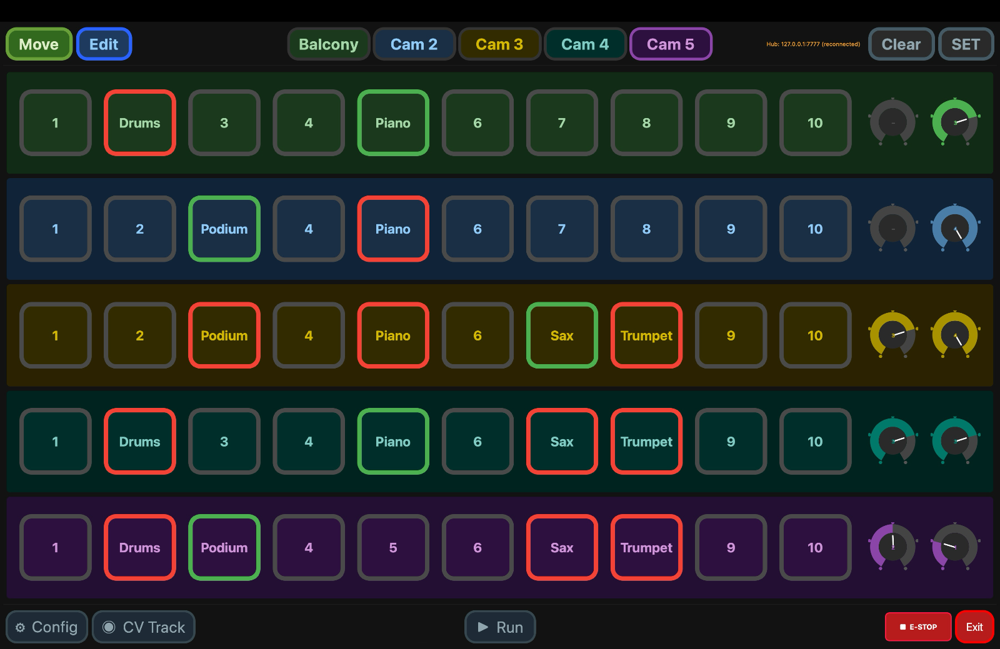

Storing & recalling shots
The core loop of the whole system: frame it, store it, recall it on demand.
Every mount has ten position slots (1–10). A slot holds a complete framing — pan, tilt, slider and zoom together. Store your shots once, then recall any of them instantly from any controller, at whatever speed you choose.
The three actions
| Action | What it does |
|---|---|
| Store | Saves the mount's current position into a slot, overwriting whatever was there. |
| Recall (goto) | Moves the mount to a stored slot, using the active speed presets. |
| Clear | Empties a slot. |
Storing a shot
- Select the camera.
- Jog it — with the PC app's joystick, the on-screen controls, or the console — until the framing is right.
- Store it to a slot (1–10). The framing is written to the mount's memory immediately.
That's it — the shot now survives power cycles and is visible to every controller.
Recalling a shot
Recall a slot and the mount travels back to the exact framing. The active speed preset decides how fast — so the same stored shot can be a slow creep for a live segment or a quick reset between takes, just by changing the preset first. Set speeds per camera; see The mounts.
Running through the shots
Run sends a camera round its stored shots on its own: to the first, then on to the next the moment it arrives, and back to the first after the last — until you stop it. On a look-at camera it slides end to end instead, holding its subject framed.
- Press RUN — every camera button changes to ▶ Run.
- Tap the camera to run. Its button takes an amber border and reads ■ Stop once the mount says it is running.
- Tap it again to stop. Press RUN again to put the buttons back; a camera still running keeps its ■ Stop.
It needs two or more stored shots (or a stored subject, on a look-at camera). The speed presets set the pace: going round the shots, a preset changed mid-run takes effect from the next shot; a look-at run keeps the slider speed it started with.
In the PC app
The PC app shows all five cameras as a position grid — ten slots per camera, each a button. A filled slot has a coloured border; an empty one is blank. Tap to recall, or use store/clear controls to manage a slot. The grid mirrors live state, so a shot recalled from another surface lights up here too. Slots can be named — see Camera & position names.

Next: the signature move — look-at tracking.